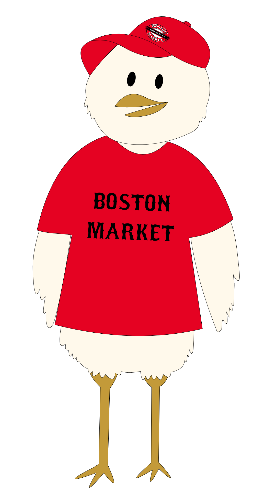

Neighborly is an ionic mobile application I worked on through an internship with 3M over summer 2019.
The app was created during a 3 day hackathon, by a team of 4 people.
I mainly focused on the front end of the application, working on look and feel.
That included development similar to Angular and graphic design work.
The purpose of Neighborly is to help connect refugees to resources they may need in a new city.
This application was created for a non-government organization in Europe, and will eventually be put into production.
The organization was excited about the work done, and said it would have taken their developers years to make the progress we made in under a week.
In one of my advertising classes, Boston Market came in and presented their client situation. In groups of 3, the class came up with advertising campaigns and tactics.
My team decided to make Boston Market a mascot, Benny the Boston Chicken!
It calls back to their original dish, appeals to children and families, and provides numerous promotional options.